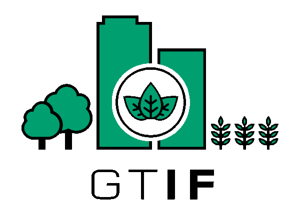

Baltic GTIF - BETA
Demonstrator
Demonstrator

The ESA Green Transition Information Factory (GTIF) allows users to interactively discover the underlying opportunities and complexities of transitioning to carbon neutrality by 2050 using the power of Earth Observation, cloud-computing and cutting edge analytics.
Demonstrator for narratives and capabilities being developed in the Baltic GTIF activity. Be advised this is a BETA deployment under developemnt and being tested, frequent and breaking changes are to be expected.